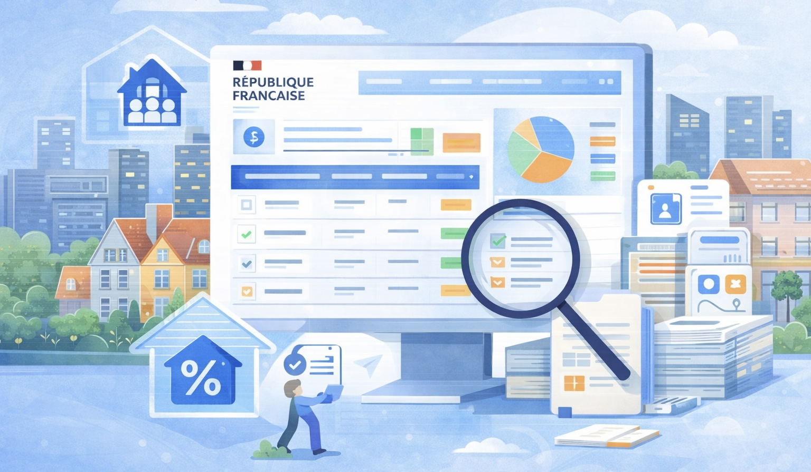
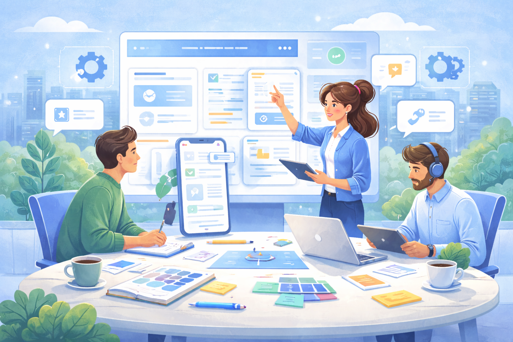
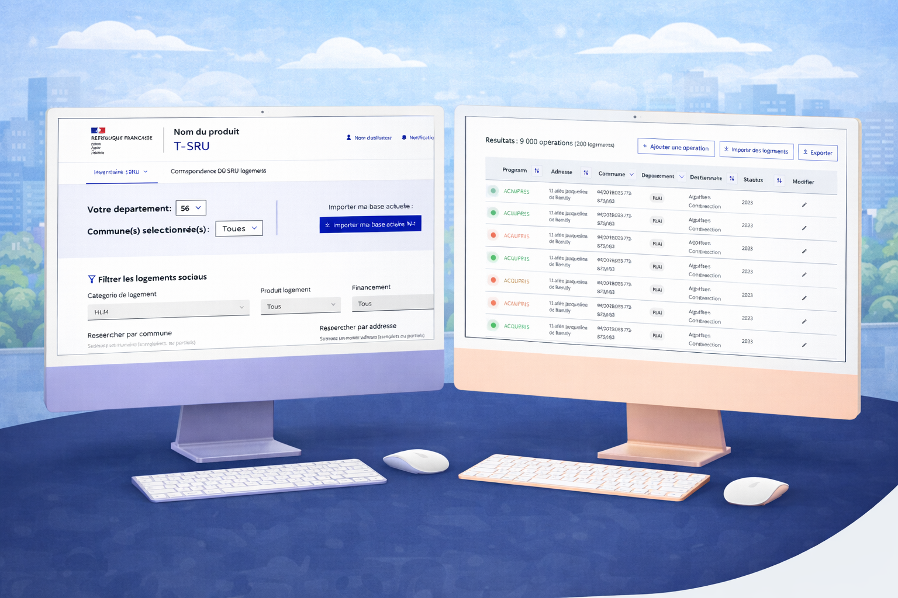
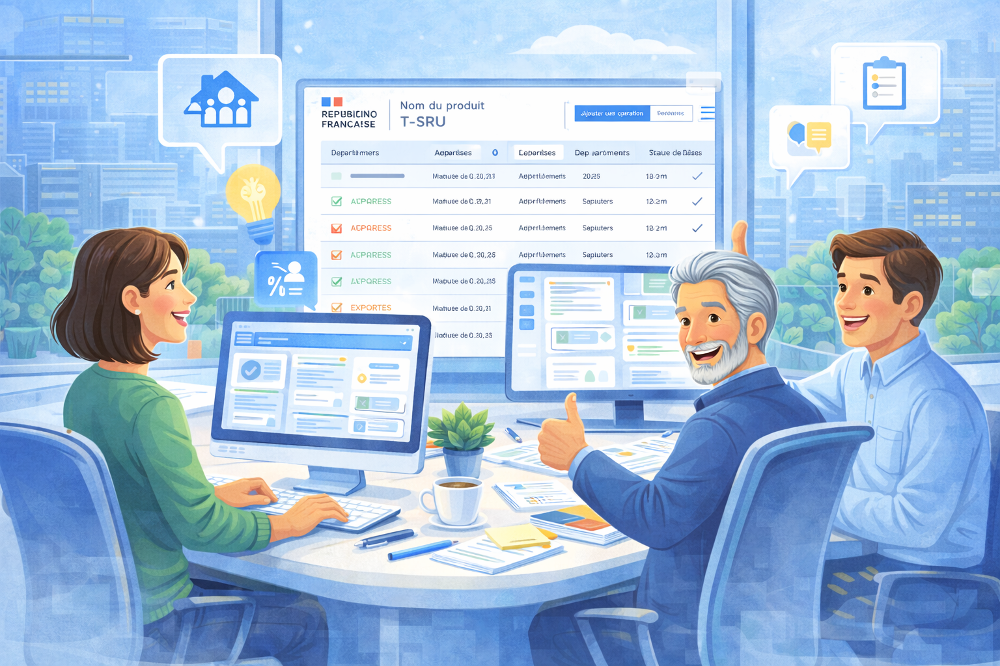

Étude de cas
UI Design pour une plateforme de gestion de logements sociaux (Ministère de la transition écologique)
Conception d’interfaces pour la plateforme Transarence SRU, destinée à faciliter le suivi et la gestion des quotas de logements sociaux, centraliser les données à l’échelle locale et nationale, et améliorer l’efficacité des équipes métiers grâce à un outil plus clair, accessible et structuré.

Contexte
Dans le cadre d’un projet mené pour le Ministère de la Transition Ecologique (MTE), une plateforme numérique devait permettre de mieux suivre les opérations de logements sociaux, consolider les informations remontées localement et faciliter leur exploitation à différentes échelles administratives.
Le produit s’adressait à des utilisateurs métiers ayant besoin d’un outil fiable, lisible et efficace pour gérer des données complexes, suivre les quotas réglementaires et naviguer plus simplement dans des interfaces aujourd’hui souvent dispersées ou fortement dépendantes de tableurs.
Problème
Le suivi du parc de logements sociaux et des quotas associés reposait encore largement sur des fichiers Excel et des processus manuels. Cette manière de travailler rendait la gestion des données longue, sujette aux erreurs et difficile à consolider à l’échelle nationale.
L’absence d’un outil centralisé complexifiait le reporting, ralentissait la prise de décision et augmentait la charge administrative pour les équipes locales comme pour les parties prenantes institutionnelles.
La Product Owner du projet ne pouvait pas avoir de designer intégrée dans l'équipe, et cherchait un soutien ponctuel pour la conception d’interfaces, la création de prototypes et l’accompagnement au handoff avec les développeurs.
Objectifs
- Moderniser un processus métier aujourd’hui lourd et largement manuel.
- Structurer l’accès à l’information dans une interface plus claire et plus intuitive.
- Permettre le suivi des opérations et des quotas de logements sociaux à plusieurs niveaux territoriaux.
- Faciliter la lecture, le filtrage et la manipulation de données métiers complexes.
- Améliorer la cohérence, l’accessibilité et la qualité visuelle globale du produit.
- Prototyper rapidement et efficacement pour répondre aux différents besoins, tout en accompagnement / mentorant la PO afin qu'elle puisse devenir indépendante sur le prototypage avec le temps
Processus de conception
Mon intervention s’est concentrée sur la conception UI du produit, en lien étroit avec les parties prenantes du ministère, la PO (freelance) et les développeurs. L’objectif était de transformer des besoins métiers complexes en interfaces compréhensibles, directement exploitables et prêtes à être implémentées.
Étapes clés
- Analyse des workflows existants et des besoins utilisateurs
- Alignement régulier avec les parties prenantes métier et les développeurs
- Conception d’interfaces haute fidélité directement dans Figma
- Travail sur la clarté visuelle, la cohérence et l’accessibilité
- Création de prototypes interactifs pour montrer les parcours et interactions aux utilisateurs avant développement
- Recueil de feedbacks, ajustements UI et accompagnement au handoff

Principaux enseignements
- Dans un contexte public et réglementaire, la clarté de l’information et la hiérarchie visuelle sont essentielles pour réduire la charge cognitive.
- Les interfaces métiers nécessitent un équilibre précis entre densité d’information, lisibilité et simplicité d’usage.
- Le prototypage haute fidélité a facilité les échanges avec les parties prenantes en rendant les intentions de design immédiatement concrètes.
- La collaboration étroite avec les développeurs a permis de concevoir des écrans réalistes, cohérents et plus simples à implémenter.
- L’accessibilité et la cohérence UI ont constitué des leviers majeurs pour renforcer l’utilisabilité globale de la plateforme.
Solution
À partir des besoins identifiés et des échanges avec les équipes projet, j’ai conçu des interfaces visant à simplifier l’accès aux données, rendre les parcours plus fluides et améliorer la compréhension globale de l’outil.
Ce que j’ai conçu
- Des écrans métiers plus lisibles pour consulter et filtrer les opérations de logement social.
- Une structure d’interface plus claire pour faciliter la navigation dans des données nombreuses et complexes.
- Des composants UI cohérents pour homogénéiser l’expérience à travers la plateforme.
- Des prototypes interactifs pour illustrer les parcours et les comportements attendus.
- Des livrables prêts pour le handoff afin d’accompagner efficacement le développement.
Pourquoi
Sur ce type d’outil métier, l’enjeu principal n’est pas seulement esthétique. Il s’agit surtout de permettre aux utilisateurs de comprendre rapidement l’information, d’agir sans ambiguïté et de gagner du temps dans leurs tâches quotidiennes.
Le travail de design visait donc à rendre la plateforme plus intuitive, plus robuste et plus agréable à utiliser, tout en respectant les contraintes métier, techniques et institutionnelles du projet.

Résultats de la mission
La mission a permis de structurer une proposition d’interface claire et exploitable pour un produit métier complexe, en facilitant la collaboration entre parties prenantes, design et développement.

Mon rôle
J’ai apporté un support UI design sur plusieurs mois, en lien avec les parties prenantes du ministère et les développeurs en charge de la plateforme. Mon rôle était de concevoir des interfaces claires, cohérentes et directement actionnables.
- Analyse des parcours existants et des besoins fonctionnels
- Conception d’interfaces haute fidélité
- Création de prototypes cliquables
- Travail sur l’accessibilité, la cohérence et la qualité visuelle
- Recueil et intégration des retours des parties prenantes
- Support au handoff et accompagnement des développeurs